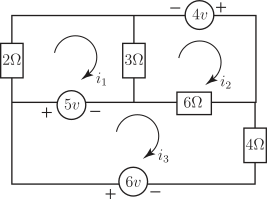

Long description: workbook8bl32

Alt text: A circuit diagram showing three loops with associated currents and voltage and resistance sources.
This description was generated by AI and has not been verified by a human. If you spot an error, please use the feedback link below.
- The diagram depicts an electrical circuit composed of four resistors with values of \(2 \text{ ohm}\), \(3 \text{ ohm}\), \(6 \text{ ohm}\), and \(4 \text{ ohm}\).
- There are three independent voltage sources: one of \(5 \text{ volts}\), one of \(4 \text{ volts}\), and one of \(6 \text{ volts}\).
- Three current loops are indicated, labeled \(i_1\), \(i_2\), and \(i_3\), with arrows showing the assumed direction of current flow in each loop.
- The components are arranged such that the \(5 \text{ volts}\) source and the \(2 \text{ ohm}\) resistor are on the left, while the \(4 \text{ volts}\) source and the \(3 \text{ ohm}\) resistor are in the upper right, and the \(6 \text{ volts}\) source, \(6 \text{ ohm}\) resistor, and \(4 \text{ ohm}\) resistor form the bottom and right sections of the circuit.